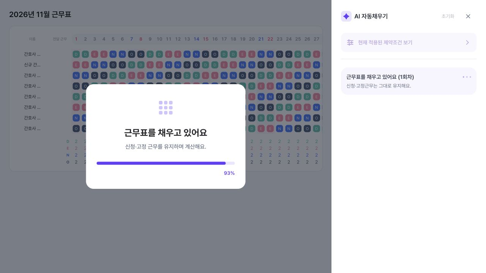
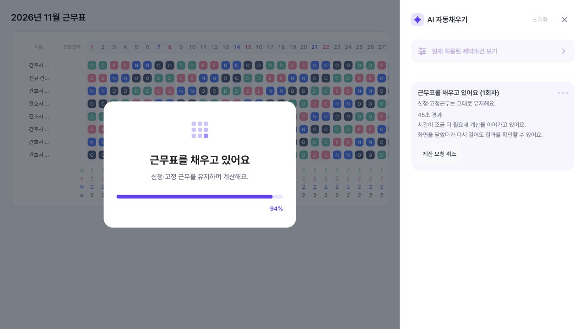
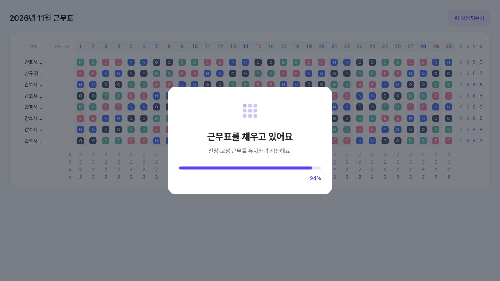

자동완성 중, 사용자가 무엇을 보고
무엇을 할 수 있어야 하는가
검토 대상: 프론트 PR #162와 연결된 장시간 계산 흐름. 대상자는 근무표를 만드는 병동 관리자다.
백엔드가 계속 계산하는 것과 사용자가 화면을 닫고 다른 작업을 할 수 있는 것은 다르다. 현재 PR은 기존 중앙 로딩창을 유지한다. 오른쪽 패널을 닫으면 로딩창이 전체 화면으로 확대되어 다시 열기 버튼까지 가린다. 이전 검증 화면은 이 상위 페이지 연결을 빠뜨렸다.
이 문서는 AS-IS 재현 / 현재 PR 재현 / TO-BE 설계안을 분리한다. TO-BE는 아직 구현되지 않았다.
1. AS-IS / 현재 PR / TO-BE
| 사용자 관점 | AS-IS — 수정 전 코드 | 현재 PR — 구현된 범위 | TO-BE — 제안, 미구현 |
|---|---|---|---|
| 계산 시작 | 중앙 로딩창과 오른쪽 AI 패널을 표시. 근무표 편집은 잠김. | 같은 중앙 로딩창 유지. 패널 안에 상태와 경과 시간, 취소 버튼 추가. | 기존 중앙 카드·아이콘의 형태를 유지. 실제 상태와 경과 시간으로 안내. |
| 진행률 숫자 | 시간이 지나면 8%에서 약 99%까지 올라가는 추정 애니메이션. 실제 계산 진척률 아님. | 그 추정 %가 그대로 남음. 패널의 실제 단계 표시와 기준이 다름. | 실제 %를 알 수 없으므로 % 대신 대기 / 계산 / 결과 확인과 경과 시간을 표시. |
| 30초 초과 | 일부 계산 경로는 시간 제한으로 결과 없이 종료될 수 있음. 모든 요청이 정확히 30초에 실패하는 구조는 아님. | 작업을 조회하며 계속 대기. 최대 계산 예산 4분. 로딩창이 계속 화면을 가림. | 30초 자체를 오류로 처리하지 않음. 안내를 바꾸고 계속 대기하거나 창을 닫고 계산을 이어갈 수 있음. |
| 창 닫기 | 패널 X를 누르면 중앙 로딩창이 전체 화면을 덮음. | 동일. “닫았다 다시 열기” 안내가 있어도 다시 열기 버튼에 접근하기 어려움. | “창을 닫고 계속 계산”은 로딩창과 패널을 숨김. 계산은 유지. 화면에 작업 상태와 다시 열기 진입점 유지. |
| 취소 | 실행 중 취소 버튼 없음. | 패널의 “계산 요청 취소”로 결과 반영을 취소. 패널이 닫히면 버튼 접근 불가. | 로딩창과 상태 상세에서 취소 가능. “창 닫기”와 의미를 분리. 취소 후 기존 표 유지, 늦게 도착한 결과 반영 금지. |
| 완료 / 실패 | 성공 시 기존 완료 연출과 결과 표시. 실패 시 기존 오류 안내. | 기존 완료 연출 유지. 닫힌 상태의 사용자 동선은 미검증. | 열린 상태: 기존 완료 연출·결과 표시. 닫힌 상태: 페이지 안에 “결과 준비됨 · 결과 보기”. 실패·4분 내 결과 없음도 기존 표 유지 및 명확한 안내. |
| 계산 중 표 수정 | 로딩 중 편집 잠금. | 실제 페이지는 여전히 잠김. 별도 HTTP 테스트에서는 수동 수정 시 덮어쓰기 방지 확인. | 창을 닫은 뒤 편집 허용. 표가 달라졌으면 계산 결과가 나와도 자동으로 덮어쓰지 않고 검토하도록 안내. |
2. 기존 로딩 화면은 어디에 남아 있는가
아래는 합성 근무표에 실제 제품 컴포넌트를 띄운 로컬 재현이다. 개발계 전체 페이지·운영 캡처가 아니다. 중앙 로딩창과 패널의 동시 표시, 패널을 닫았을 때의 레이아웃 연결을 제품 코드와 같은 방식으로 포함했다.


수정 전과 동일한 상태 카드 분기와 변경 없는 중앙 로딩 컴포넌트. 45초는 UI 상태 재현용 입력이며 수정 전 서버가 45초 계산을 보장한다는 증거가 아니다.


왼쪽 기존 로딩창은 그대로다. 오른쪽에 시간과 취소가 추가된다. 이전에 공유한 중앙 로딩창 없는 캡처는 이 구성을 빠뜨렸다.
실제로 재현한 문제: 패널 X 클릭 후

3. TO-BE에서 검토할 사용자 흐름 설계안 · 미구현
근무표를 채우고 있어요
계산 중 · 45초 경과
시간이 조금 더 필요해 계산을 이어가고 있어요.
창을 닫아도 계산은 계속돼요.
[창을 닫고 계속 계산] [계산 취소]
버튼은 문서상 설계 표기다. 여기서 실제 계산을 실행하거나 취소하지 않는다. 실제 진행률로 오해할 %는 표시하지 않는다. 기다리려면 창을 그대로 둔다.
AI 자동채우기 계산 중 · 45초
[진행 상황 보기]
기존 근무표를 볼 수 있고, 편집할 수 있다. 진행 상황을 열면 같은 작업으로 돌아간다.
완료되면 “자동채우기 결과가 준비됐어요 · 결과 보기”로 바뀐다. 계산 중 표를 바꿨으면 새 결과가 현재 표를 자동으로 덮어쓰지 않는다.
이 상태 표시와 진입점도 아직 제품에 구현되지 않았다. 화면 밖 푸시 알림은 이번 범위에 포함하지 않는다.
4. PO·PM 인수 기준
개발계에 TO-BE 구현이 반영된 후 아래 행동으로 확인한다. 체크는 이 문서를 읽는 사람의 임시 메모이며 자동 테스트 통과·승인을 뜻하지 않는다.
5. 지금 검증된 것과 남은 것
확인됨: 로컬 HTTP 연동에서 30초 초과 후 완료·재진입·취소·수동 편집 보호. 이번에 기존 중앙 로딩창 동시 표시 및 패널 닫기 후 전체 화면 가림 재현. 백엔드 계속 계산과 화면 동선은 별개로 평가해야 한다.
남음: 위 TO-BE의 로딩창 행동·계속 계산 진입점 구현, 상위 페이지를 포함한 회귀 테스트, 개발계 실제 페이지에서 PO·PM 인수 기준 확인. 현재 PR의 UI를 배포 가능한 상태로 승인한 것이 아니다.
개발자용 근거와 재현
AS-IS 기준은 develop 공통 조상 086eab2d1b6781b4bc6d44ebc9767d5b664574e8. 현재 PR은 cf317379. 해당 변경에서 ai-auto-fill/index.tsx와 ai-autofill-loading-overlay.tsx는 수정하지 않았다.
index.tsx: handleConversationBusyChange → isAiGenerating → AiAutofillLoadingOverlay, sidebarOpen=isConversationOpen.ai-conversation-sidebar.tsx: executionBusy=executing||running → onBusyChange. X는 onClose만 호출하며 계산을 취소하지 않는다.ai-autofill-loading-overlay.tsx: sidebarOpen=false면 inset-0. %는 getSimulatedProgress(elapsedMs)로 계산된다.- 로컬 리뷰 경로:
/tests/integration/ai-ux-review.html?scene=background-as-is및scene=background-current-pr. 현재 PR 씬에서 패널 X를 클릭해 전체 화면 가림을 재현한다.
리뷰 fixture는 실제 중앙 로딩 컴포넌트와 busy callback을 포함하지만 전체 제품 부모 컴포넌트를 마운트한 E2E는 아니다. 운영 데이터·운영 계정은 사용하지 않았다. AS-IS는 기존 렌더링 분기의 재구성이며 운영 배포 버전 동일성 검증이 아니다.